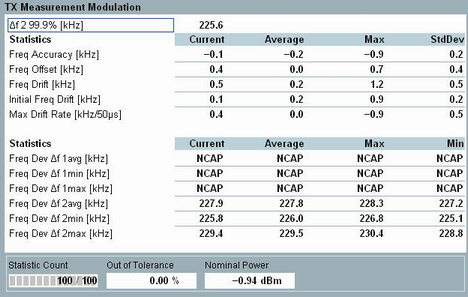

The "TX Measurement Modulation" view shows an overview of modulation results and the corresponding statistics.
- For test packets "RF_PHY_TestRef", all modulation results are supported. Some of the results require particular physical layer or a special payload "Pattern Type". See "Modulation Measurements LE Uncoded PHY" and "Modulation Measurements LE Coded PHY S = 8".
- For packet type "Advertiser", only modulation results "Frequency Accuracy" are provided according to the specification. All other results are marked with an asterisk (*). It indicates, that these parameters are not calculated according to the specification, which requires 10101010 or 11110000 patterns and RF test packets to be used.

The "TX Measurement Modulation" result table contains the following values:
Frequency deviation value Δf2 above which 99.9% of all measured Δf2 values occur.
A Δf2 99.9% value of 185 means that 99.9% of all measured Δf2 values are above or equal to 185 kHz.
This measurement spans over all packets with sufficient payload length.
Δf2 99.9% measurement requires a payload pattern "10101010".
The results are only relevant for LE uncoded PHY (LE 1M PHY, LE 2M PHY).
See also "Freq. Dev. Δf2".
Δf1 99.9% is frequency deviation value Δf1 above which 99.9% of all measured Δf1 values occur. The result is only relevant for LE coded PHY with coding S=8.
Δf1 99.9% measurement requires a payload pattern "11111111".
The frequency accuracy is the difference between the nominal channel frequency fTX and the initial carrier frequency f0, measured over the packet preamble:
Freq. accuracy = f0 – fTX
Maximum difference between the nominal channel frequency fTX and carrier frequencies fn, n = 1 ... N measured over the packet preamble and payload:
Freq. offset = fm– fTX, where m = arg maxn ∈ {1, ..., N}(|fn– fTX|)
This measurement does not include the payload header, payload length field or the CRC bits. The frequency offset measurement requires a payload length of at least 2 bytes.
- For LE 1M PHY, the R&S CMW integrates the frequency of the demodulated signal in non-overlapping 10-bit intervals ('0101010101'), starting from the second payload bit. The first bit and incomplete 10-bit groups are not considered for the calculation.
This measurement requires a payload length of at least 2 bytes and payload pattern "10101010". - For LE 2M PHY, the R&S CMW integrates the frequency of the demodulated signal in non-overlapping 20-bit intervals, starting from the second payload bit. The first bit and incomplete 20-bit groups are not considered for the calculation.
This measurement requires a payload length of at least 3 bytes and payload pattern "10101010". - For LE coded PHY, the R&S CMW integrates the frequency of the demodulated signal in non-overlapping 16-symbol intervals, starting from the symbol 31. The first 30 symbols and the last 34 symbols are not considered for the calculation.
This measurement requires a payload length of 255 bytes and payload pattern "11111111".
Maximum difference between the measured initial carrier frequency f0 and the carrier frequencies fn, n = 1 ... N, measured within the test packet payload (see "Freq. offset") :
Freq. drift = fm– f0, where m = arg maxn ∈ {1, ..., N}(|fn– f0|)
This measurement does not include the payload header, payload length field or the CRC bits.
LE 1M PHY and LE 2M PHY measurements require a payload pattern "10101010". LE coded PHY (S = 8) measurements require a payload pattern "11111111".
Difference between the measured initial carrier frequency f0 and the first carrier frequency f1 measured within the payload:
Initial Freq. drift = f1 – f0
See "Freq. offset".
This measurement requires a payload pattern "10101010".
The results are only relevant for LE uncoded PHY (LE 1M PHY, LE 2M PHY).
Maximum of the drift rate anywhere within the packet payload. This measurement does not include the payload header, payload length field or the CRC bits. The drift rate is calculated as follows:
- For LE 1M PHY:
The maximum drift rate is based on the difference in carrier frequencies fn between any two 10-bit groups separated by 50 µs:
Max. drift rate = (fm – fm-5), where m = arg maxn ∈ {6, ..., N}(|fn– fn-5|)
The maximal drift rate measurement requires a payload length of at least 8 bytes and payload pattern "10101010". - For LE 2M PHY:
The maximum drift rate applies to the difference between any two 20-bit groups separated by 50 µs within the payload field of the packet transmitted by the EUT. - For LE coded PHY (S = 8):
The maximum drift rate is measured for payload pattern "11111111", anywhere in the packet. The maximum drift rate applies to the difference between any two groups of 16 symbols separated by 48 µs within the payload field of the packet transmitted by the EUT. The requirement also applies to the frequency difference between the initial frequency measurement f0 and f3 within the preamble.
Difference between the modulated frequency and the observed carrier frequency for packets carrying a 11110000 transmitter payload pattern.
The results are not relevant for LE coded PHY (S = 2).
The following table lists the differences between the settings on LE uncoded and coded PHY measurements.
LE uncoded PHY | LE coded PHY (S = 8) | |
|---|---|---|
Pattern | "11110000" | "11111111" |
Range | The first 4 bits and incomplete 8-bit groups are not considered for the calculation. | Measures from the beginning of the 31st symbol in the payload. The last 34 symbols in the payload are disregarded. |
Payload length | min 2 bytes for LE 1M PHY, min 3 bytes for LE 2M PHY | min 16 bytes |
- Divides the payload into its "00001111" 8-bit subsequences
- Each bit of the payload is oversampled at least 32 times
- For each "00001111" 8-bit subsequence, the average frequency f1ccf is calculated
- For each of the "00001111" 8-bit subsequences, the frequency deviation of bits 2, 3, 6 and 7 from favg are calculated as Δf1max, i
- Δf1 avg is the average of all Δf1max, i values in the payload
- Δf1 max is the largest of all Δf1max, i values in the payload
- Δf1 min is the smallest of all Δf1max, i values in the payload
Difference between the modulated frequency and the observed carrier frequency for packets carrying a "10101010" payload pattern.
- The R&S CMW considers "10101010" bit sequences.
- The frequency deviation for each bit is defined as the maximum deviation within the bit period.
- Frequency deviations Δf2max, i are calculated for all bits in the considered "10101010" bit sequences. The calculation of the Δf2 99.9% result is based on these deviations.
- Δf2 avg is the average of all Δf2max, i values in the payload
- Δf2 max is the largest of all Δf2max, i values in the payload
- Δf2 min is the smallest of all Δf2max, i values in the payload
The first four bits and incomplete 8-bit groups (the last 4 bits) are not considered for the calculation.
This measurement requires a minimum payload length of 2 bytes and payload pattern "10101010".
The results are only relevant for LE uncoded PHY (LE 1M PHY, LE 2M PHY).
Additional results in automatic detection mode If automatic burst detection is active ("Input Signal > Detection Mode: Auto"), the "Modulation Scalars" view also shows the detected pattern type, and payload length. Automatic detection mode is indicated in the upper right corner. In "LE All Channels" mode, the number of off slots has to be displayed. This mode is not supported for LE coded PHY. The "Pattern Yield" is the percentage of detected packets with a specific payload pattern type. This result is not provided for LE coded PHY. The modulation ratio Δf2 avg / Δf1 avg is the ratio of the smallest measured frequency deviation min(Δf2 avg) to the largest one max(Δf1 avg). This value requires at least one LE packet with a "11110000" and one with a "10101010" payload pattern; see definition of Δf2 and Δf1 above. This result is not provided for LE coded PHY. |
For query of the results via remote control, see "Modulation Measurement Results (LE)"